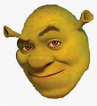
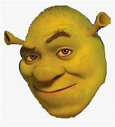
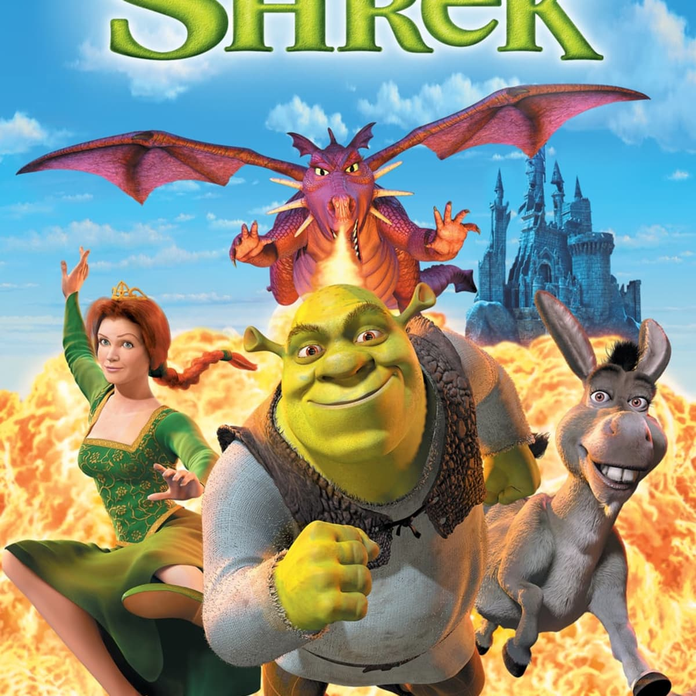

Contact me here:
Email: shrekiologist@gmail.com
Phone: (423) 123-4567
@shrek123
Email: shrekiologist@gmail.com
Phone: (423) 123-4567
@shrek123
Shrek is a 2001 American computer-animated fantasy comedy film loosely based on the 1990 children's picture book of the same name by William Steig. Directed by Andrew Adamson and Vicky Jenson (in their feature directorial debuts) and written by Ted Elliott, Terry Rossio, Joe Stillman, and Roger S. H. Schulman, it is the first installment in the Shrek film series..
 Read More....
Read More....
Shrek 2 is a 2004 American computer-animated fantasy comedy film loosely based on the 1990 children's picture book Shrek! by William Steig. Directed by Andrew Adamson, Kelly Asbury, and Conrad Vernon (in Vernon's feature directorial debut) from a screenplay by Adamson, Joe Stillman, J. David Stem, and David N. Weiss, it is the sequel to Shrek (2001) and the second installment in the Shrek film series..
 Read More...Some time after the events of the second film, Shrek and Princess Fiona are to succeed King Harold, but Shrek's attempts to serve as the Regent during Harold's medical absence end in disaster, since he has no interest in being king of Far Far Away. With his dying breath, Harold tells Shrek of another heir: his nephew and Fiona's cousin, Arthur "Artie" Pendragon.
 More
Read More...
More
Read More...